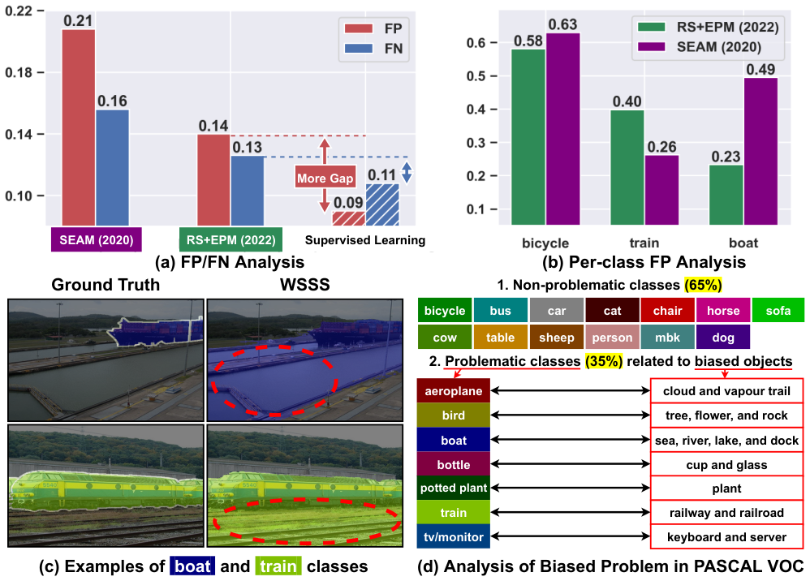
The biased problem in weakly-supervised semantic segmentation (WSSS). (a) The false positive (FP) is the most crucial bottleneck in narrowing the gap between WSSS and fully-supervised semantic segmentation (FSSS). (b, c) FP grows when a target class such as boat or train is predicted together with a class-related object such as the sea or a railroad (red dotted circles). (d) 35% of the classes in PASCAL VOC 2012 have such biased objects.
Biased features can be separated and eliminated by matching biased objects with backgrounds in the same dataset. Unsupervised semantic segmentation (USS) has fewer biased features than WSSS, because the bias issue is intrinsically linked to image-level supervision. Clustering USS features inside each WSSS prediction separates the biased object from the target, and the one closer to the background regions of other images is the biased object. MARS turns this into a fully-automatic removal of biased objects from pseudo labels, with no additional dataset or supervision.
Two earlier studies alleviate the biased problem, but both depend on additional supervision. CLIMS uses the CLIP model, trained on 400 million image-text pairs, and needs the biased objects of every problematic class to be identified, such as a railroad for the train class. W-OoD needs human annotators to collect additional images that contain only biased objects from the Open Images dataset. These requirements hinder WSSS in the real world, where classes have complex relationships, and both methods share results only on PASCAL VOC 2012.
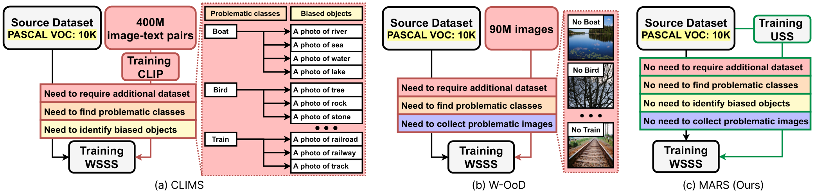
Conceptual comparison of three WSSS requirements. (a) CLIMS uses the knowledge of CLIP, trained on an image-text pairs dataset, after finding problematic classes and identifying their biased objects. (b) For W-OoD, human annotators manually collect problematic images from the Open Images dataset to train biased objects directly. (c) MARS applies an existing USS approach to remove biased objects without additional supervision.
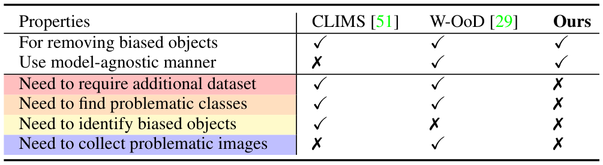
Comparison with related debiasing methods. All three remove biased objects, and W-OoD and MARS are model-agnostic. Only MARS needs none of the four requirements: an additional dataset, finding problematic classes, identifying biased objects and collecting problematic images.
Weakly-supervised semantic segmentation aims to reduce labeling costs by training semantic segmentation models using weak supervision, such as image-level class labels. However, most approaches struggle to produce accurate localization maps and suffer from false predictions in class-related backgrounds (i.e., biased objects), such as detecting a railroad with the train class. Recent methods that remove biased objects require additional supervision for manually identifying biased objects for each problematic class and collecting their datasets by reviewing predictions, limiting their applicability to the real-world dataset with multiple labels and complex relationships for biasing.
Following the first observation that biased features can be separated and eliminated by matching biased objects with backgrounds in the same dataset, we propose a fully-automatic/model-agnostic biased removal framework called MARS (Model-Agnostic biased object Removal without additional Supervision), which utilizes semantically consistent features of an unsupervised technique to eliminate biased objects in pseudo labels.
Surprisingly, we show that MARS achieves new state-of-the-art results on two popular benchmarks, PASCAL VOC 2012 (val: 77.7%, test: 77.2%) and MS COCO 2014 (val: 49.4%), by consistently improving the performance of various WSSS models by at least 30% without additional supervision. Code is available at https://github.com/shjo-april/MARS.
Applying USS in WSSS finds biased objects automatically: USS-based feature clustering separates biased and target objects, and a new distance metric selects the biased object among the two isolated objects.
MARS leverages semantically consistent features learned through USS to eliminate biased objects without additional supervision and dataset, by connecting existing WSSS and USS methods.
Current debiasing methods are validated only on PASCAL VOC 2012. MARS is also verified on MS COCO 2014, with larger and more complex labels, and achieves new state-of-the-art results on both (VOC: 77.7%, COCO: 49.4%).
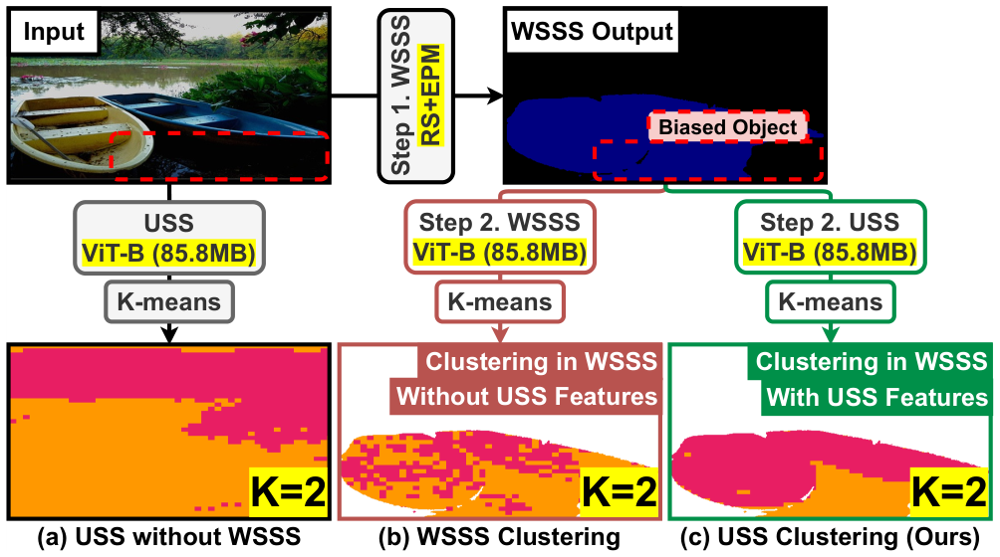
Integration of WSSS and USS. (a) Without the WSSS output, the USS method fails to detect biased objects. (b) The WSSS method cannot find biased objects because it uses biased features. (c) With the WSSS guidance, the USS method identifies biased objects on a limited area of the WSSS output.
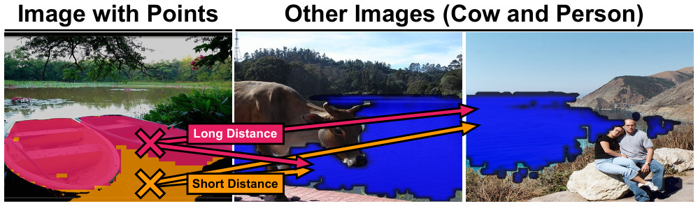
Correspondence between biased objects and backgrounds. The distance is measured between each separated object (crosses) and the background regions of other images within the same dataset. Long and short distances reflect target and biased objects, respectively, so the distance of USS features serves as the criterion to remove biased objects after clustering.
MARS has four stages: training existing WSSS and USS methods, selecting debiased centroids, generating debiased labels, and complementing debiased labels during the learning process. The WSSS and USS models are trained from scratch on the same dataset and then frozen, so no additional dataset is required.
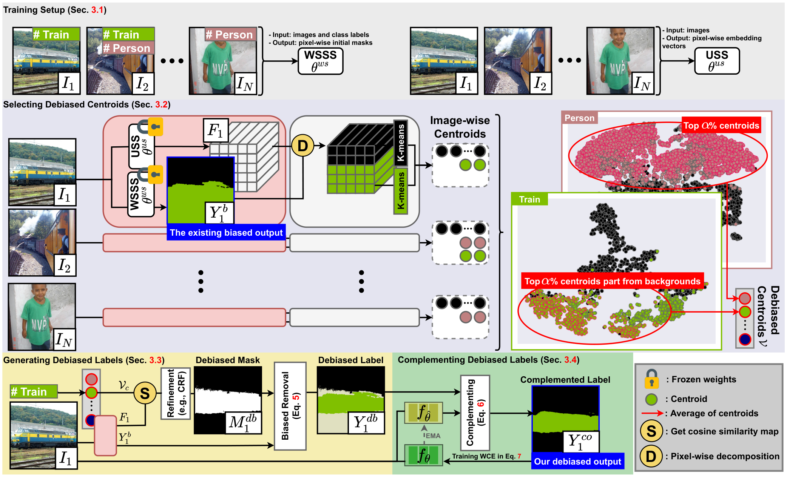
Overview of MARS. The USS and WSSS methods, trained from scratch, produce pixel-wise embedding vectors and pseudo labels that include biased objects. K-means clustering generates image-wise centroids (biased and target objects) per class, and the debiased centroid of each class is the average of the top α% centroids most apart from the background centroids of all training images. The similarity map between debiased centroids and USS embeddings gives the debiased label, and the segmentation network is trained with the weighted cross-entropy (WCE) loss.
The frozen USS model gives pixel-wise embedding vectors without class-specific information, and the frozen WSSS model gives pseudo labels that include both biased and target objects. For each class in an image, the embeddings inside the WSSS prediction region are clustered with K-means into image-wise centroids, and two clusters per foreground class separate the biased object from the target. Each foreground centroid is then scored by its average distance to the background centroids of all training images: a long distance means a target, a short distance a biased object. The top α% centroids most apart from the backgrounds are averaged into one debiased centroid per class.
The cosine similarity between each debiased centroid and the pixel-wise USS embeddings gives a similarity map. Since USS cannot separate classes that share a super-category (horse and sheep, for example), the maps of the classes in the image are merged with a pixel-wise maximum, followed by ReLU and a typical refinement such as CRF, into a binary debiased mask. A foreground pixel of the WSSS label that falls outside this mask is assigned to a new biased class, which removes the biased predictions of WSSS.
The removal also eliminates some non-biased objects (people's clothes, for example), which increases false negatives (FN) in non-problematic classes. A teacher network, updated with an exponential moving average, fills the biased pixels with its refined online predictions. Because these predictions are uncertain in early epochs, a certain mask weights the per-pixel cross-entropy loss (WCE): on the complemented pixels it holds the teacher's maximum probability over the classes of the image, and it is 1 elsewhere.
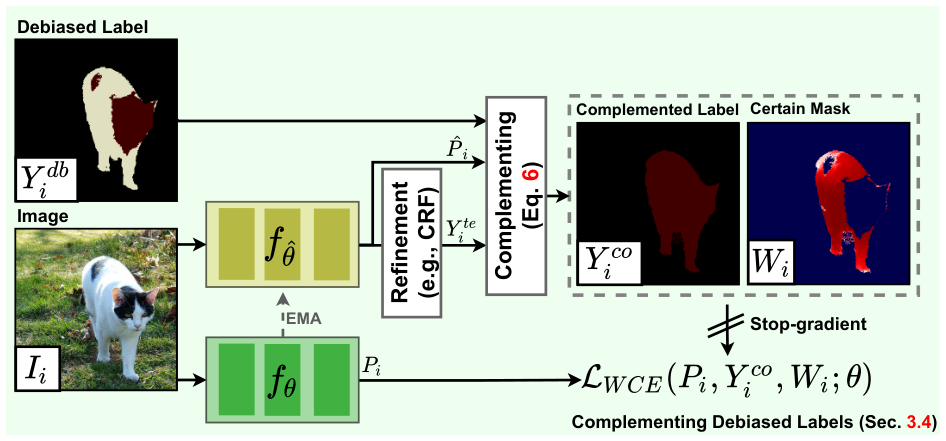
Illustration of the complementing process. With the refinement, the teacher network produces the teacher's label. Biased pixels in the debiased label are complemented with the teacher's prediction to prevent increasing FN of non-problematic classes. To avoid training on uncertain labels, the student network is updated with the WCE loss using complemented labels and certain masks.
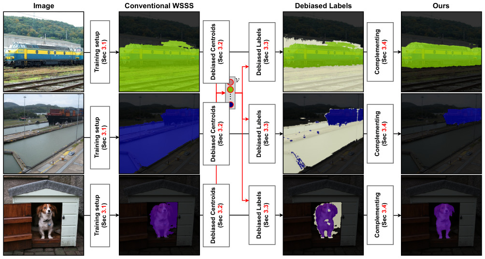
Effect of the proposed components. For problematic classes with biased objects (train and boat), selecting debiased centroids and generating debiased labels remove the biased objects, and complementing keeps them removed (first and second rows). For non-problematic classes without biased objects (dog), complementing accurately restores the non-biased objects (third row).
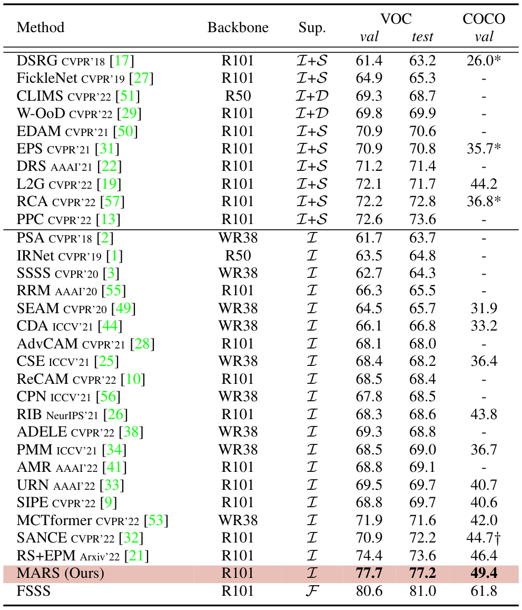
mIoU (%) on PASCAL VOC 2012 and MS COCO 2014. With image-level class labels only (I), MARS reaches 77.7% (val) and 77.2% (test) on VOC and 49.4% on COCO, above the methods that add saliency supervision (S) or an external dataset (D). FSSS (F) is trained with pixel-wise annotations. * and † indicate VGG-16 and ResNet-50 backbones.
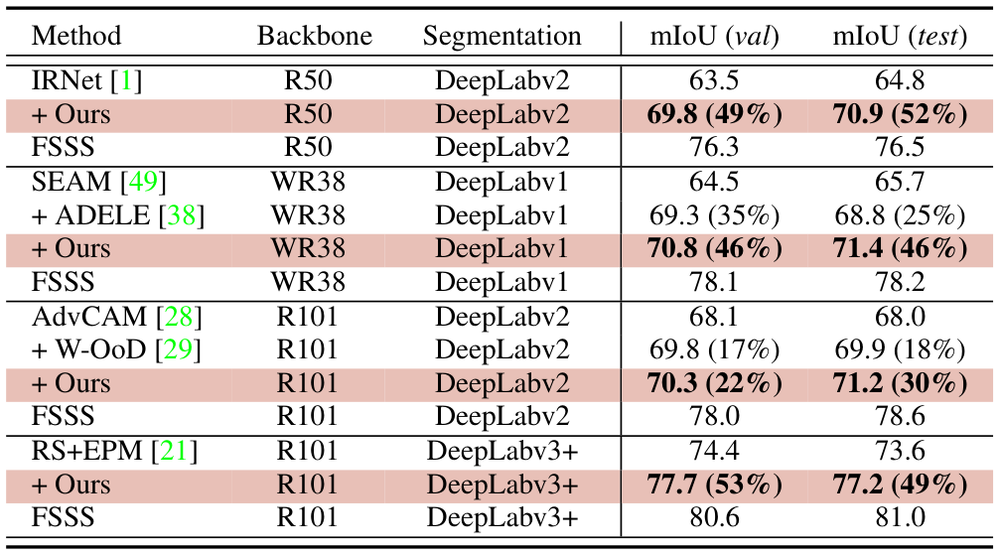
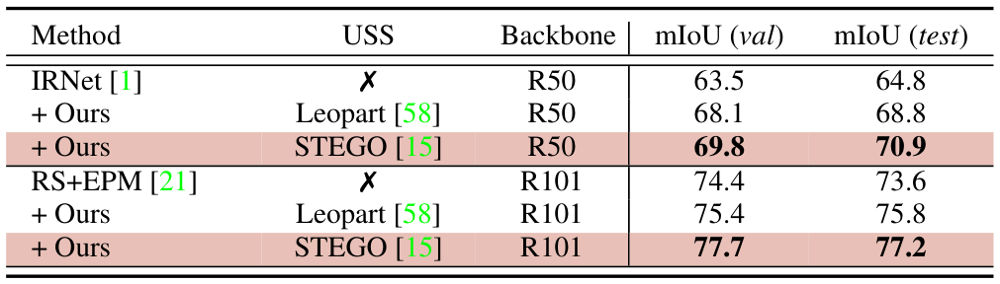
Consistent gains on PASCAL VOC 2012, whichever WSSS or USS method is used. First table: with the same backbone and segmentation model, MARS improves IRNet, SEAM, AdvCAM and RS+EPM by 6.3%, 6.3%, 2.2% and 3.3% on the val set; the parentheses give the percentage improvement in the gap between WSSS and FSSS. Second table: MARS outperforms the baselines with either Leopart or STEGO, and STEGO performs best.
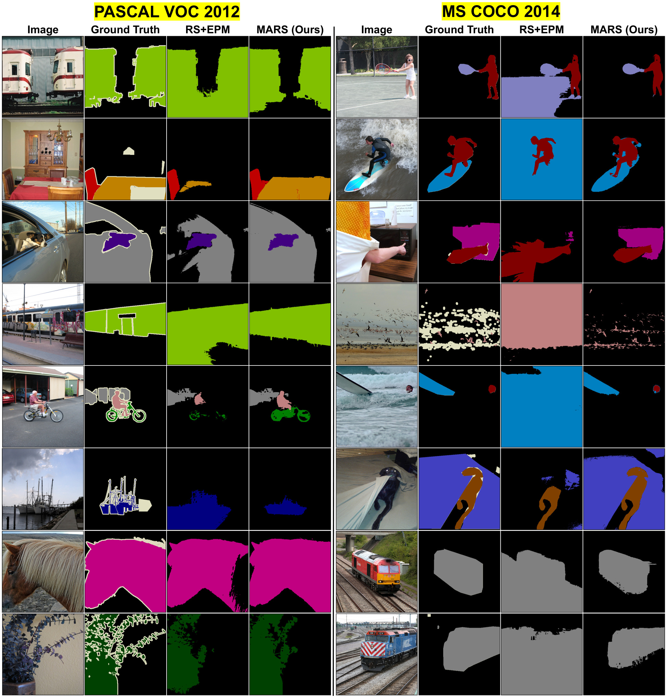
Qualitative results on PASCAL VOC 2012 and MS COCO 2014 validation sets. Compared with RS+EPM, MARS removes the biased objects of problematic classes, such as the railroad in train, the tennis court in tennis racket and the sea in surfboard, and covers more object regions for large-scale objects such as horse, car and dining table.
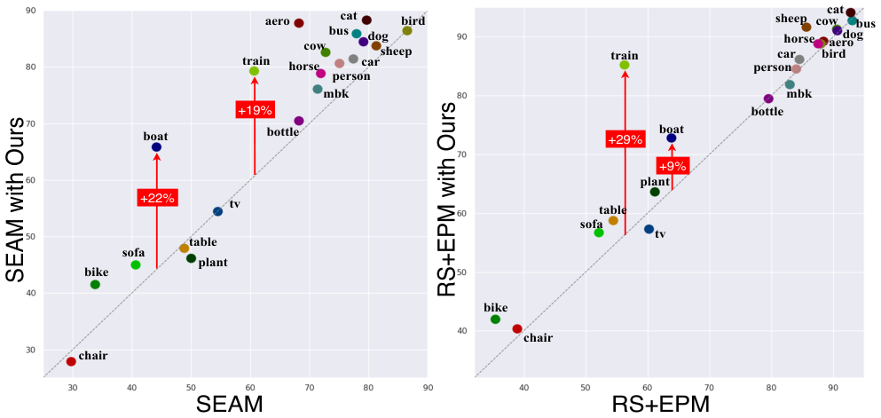
Category-wise IoU (%) on the PASCAL VOC 2012 validation set. MARS improves most categories, with significant improvements in the classes that have biased objects: +29% for train and +9% for boat over RS+EPM, and +19% and +22% over SEAM. A few categories such as tv/monitor decrease marginally because of the poor quality of the pseudo masks from the WSSS method.
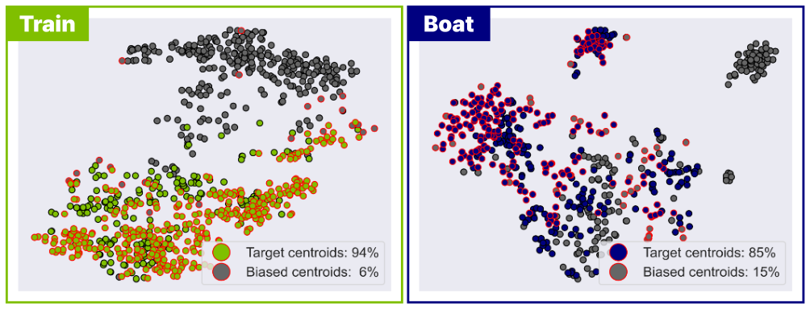
Visualization of selecting debiased centroids. Centroids of the train and boat classes are labelled as target or biased with pixel-wise annotations and shown after T-SNE. Among the selected centroids, 94% are target centroids for train and 85% for boat.
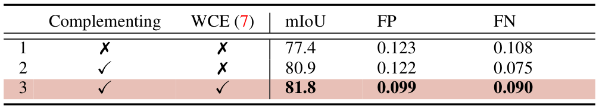
Effect of the key components on the PASCAL VOC 2012 train set. Row 1 is the RS+EPM baseline (77.4%). Complementing without the WCE loss (row 2) raises mIoU to 80.9% and lowers FN from 0.108 to 0.075. Adding the WCE loss with certain masks (row 3) lowers FP from 0.122 to 0.099 and gives the best mIoU, 81.8%.
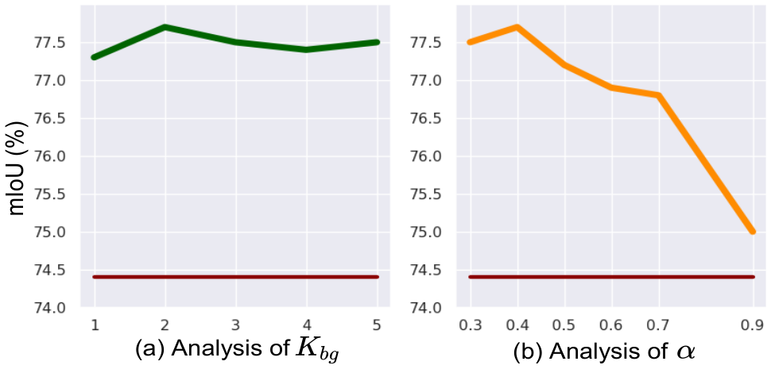
Sensitivity to Kbg and α on the PASCAL VOC 2012 val set. MARS improves over the RS+EPM baseline (red line) across all settings. Varying Kbg from 1 to 5 does not significantly affect the performance. Larger values of α (above 0.5) bring only marginal improvements, because biased and target centroids become difficult to disentangle. The final results use Kbg = 2 and α = 0.40.
On an Intel Xeon Gold 6130 CPU with 64 cores, the clustering step and the refinement step take 10 and 9 minutes on the PASCAL VOC training set. In evaluation, MARS has the same runtime as the other methods.
@InProceedings{Jo_2023_ICCV,
author = {Jo, Sanghyun and Yu, In-Jae and Kim, Kyungsu},
title = {MARS: Model-agnostic Biased Object Removal without Additional Supervision for Weakly-Supervised Semantic Segmentation},
booktitle = {Proceedings of the IEEE/CVF International Conference on Computer Vision (ICCV)},
month = {October},
year = {2023},
pages = {614-623}
}